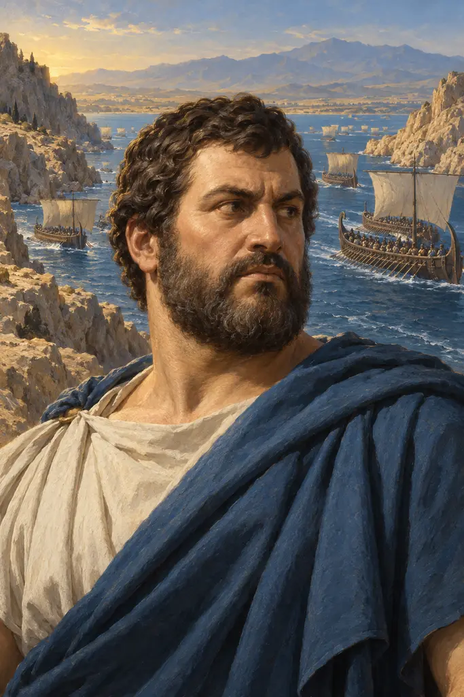
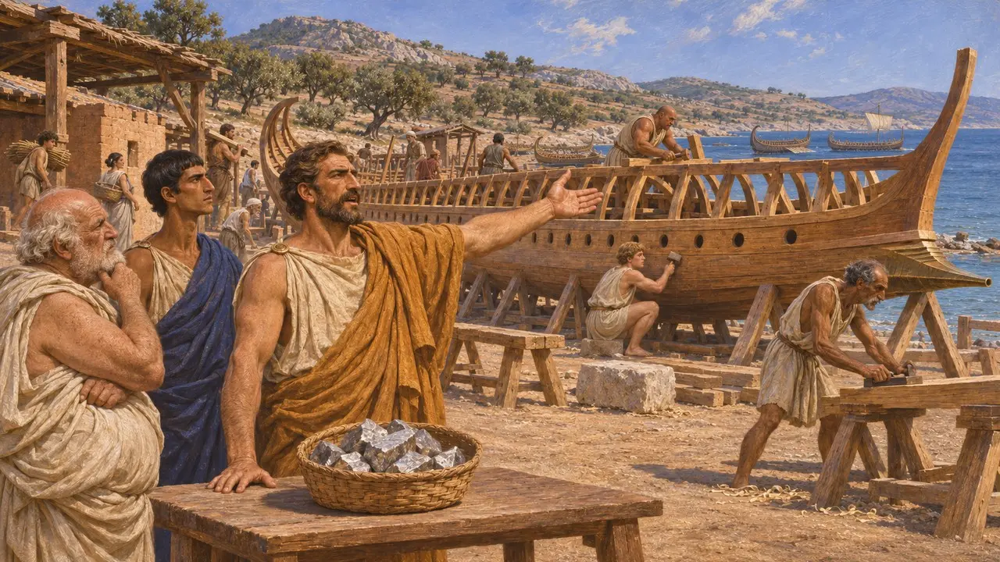
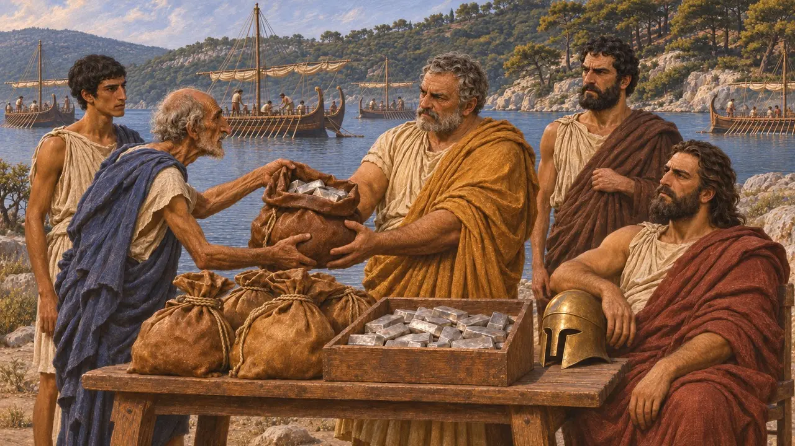
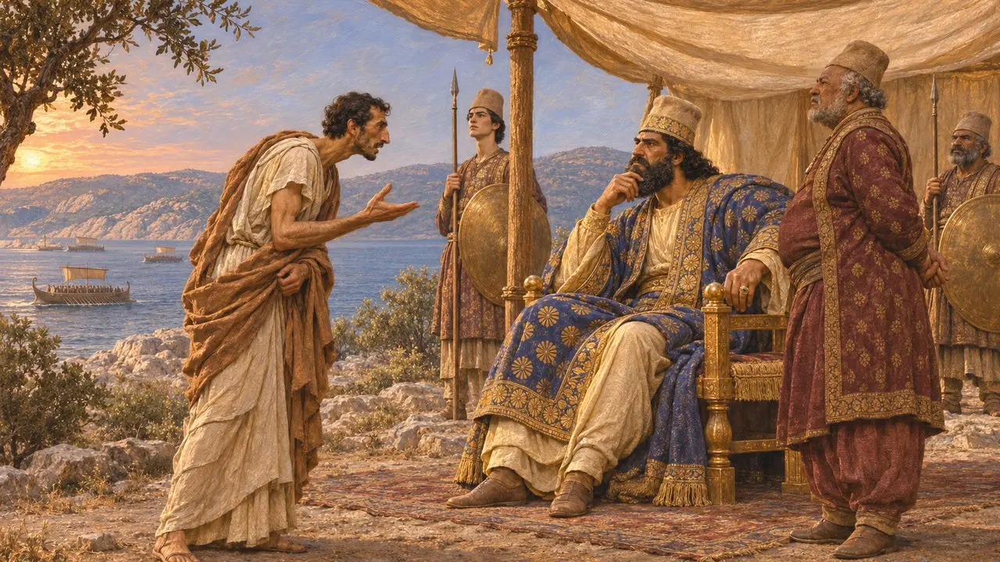
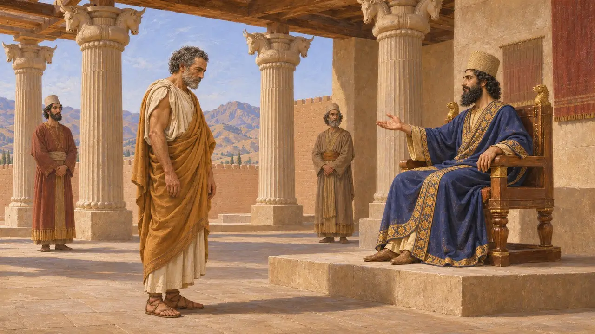
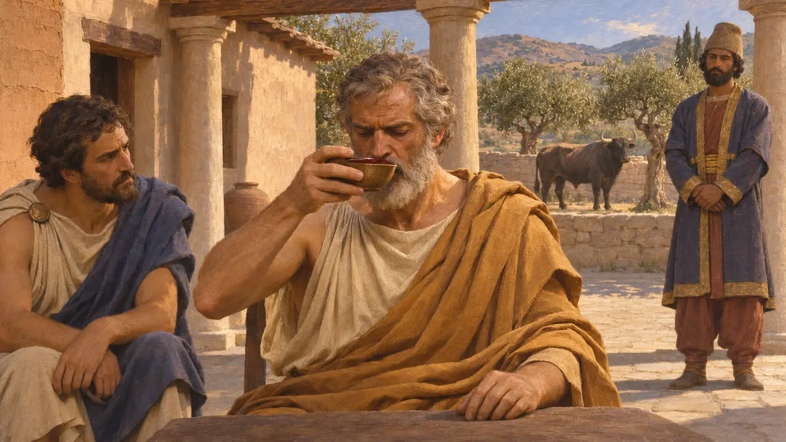

테미스토클레스는 아테네의 정치가이자 장군으로, 기원전 480년에 크세르크세스와 맞서 싸운 함대를 건조하도록 자기 도시를 설득했다. 헤로도토스는 그가 아르테미시온에서 그리스 함선들을 결속시키고, 페르시아 해군이 패배한 살라미스 해전을 이끌어 냈다고 평가한다. 그는 페르시아 왕이 내려 준 세입으로 살아가는 망명객으로서 아시아에서 생을 마쳤다.
게임에서: 게임 속 연대기는 헤로도토스를 따릅니다. 라우리온 은으로 건조한 함선, 아르테미시온에서 오간 선물, 살라미스 작전이 그것입니다. 함선 200척이라는 수치는 헤로도토스의 것이며, 다른 고대 사료는 100척이라고 전합니다.

라우리온의 은과 나무 성벽
고대의 전승헤로도토스에 따르면, 라우리온 광산에서 풍부한 은맥이 새로 발견되자 테미스토클레스는 그 은을 시민들끼리 나누어 가지려던 아테네인을 설득해 단념시켰다. 대신 그들은 아이기나와의 전쟁을 위해 배 200척을 건조했다. 헤로도토스는 또한 테미스토클레스가 나무 성벽에 관한 델포이 신탁을 함선을 뜻하는 것으로 풀이했다고 전한다. 아리스토텔레스학파의 『아테네인의 정체』는 100척이라고 전하므로 그 수는 확실하지 않다.
Herodotus 7.143-144; Aristotle, Constitution of the Athenians 22.7

아르테미시온에 함대를 붙잡아 둔 선물
고대의 전승헤로도토스에 따르면 방비 없이 버려질 것을 두려워한 에우보이아인들은 그리스 함대를 아르테미시온에 붙잡아 두려고 테미스토클레스에게 30탈란트를 주었다. 그는 스파르타 사령관 에우리비아데스에게 5탈란트, 코린토스의 아데이만토스에게 3탈란트를 건네고 나머지는 자신이 챙겼다. 함대는 머물러 사흘에 걸쳐 페르시아 함선들과 싸웠고, 테르모필레가 함락되었다는 소식이 오자 남쪽으로 물러났다.
Herodotus 8.4-5

살라미스 전투 전 크세르크세스에게 보낸 전언
분쟁 중헤로도토스에 따르면 테미스토클레스는 노예 시킨노스를 크세르크세스에게 보내 그리스인이 몰래 빠져나가려 한다고 알렸고, 이에 페르시아 함선들이 밤사이 움직여 해협을 봉쇄했다. 아마도 이 전쟁에 직접 참전했을 아이스킬로스도 기원전 472년 작 『페르시아인』에서 한 그리스인이 보낸 비슷한 전갈을 묘사한다. 역사가들은 이 계략이 전투를 일으킨 것인지, 아니면 페르시아 지휘관들이 이미 공격을 결정해 두었던 것인지를 두고 여전히 논쟁한다.
Herodotus 8.75-76; Aeschylus, Persians

대왕의 궁정에서의 망명 생활
고대의 전승아테네에서 도편추방되고 뒤이어 페르시아 편에 섰다는 죄로 유죄 판결을 받은 테미스토클레스는 아시아로 달아났다. 투키디데스에 따르면 그는 새 왕 아르타크세르크세스에게 편지를 보냈고, 1년 동안 페르시아어와 관습을 익혔으며, 마이안드로스 강변의 마그네시아를 빵 몫으로, 람프사코스를 포도주 몫으로, 미우스를 그 밖의 음식 몫으로 하사받았다. 플루타르코스가 언급하듯 후대의 일부 저술가는 그 왕을 크세르크세스라고 적었다. 그는 마그네시아에서 죽었는데, 투키디데스에 따르면 병사였다.
Thucydides 1.135-138; Plutarch, Themistocles 27

황소의 피 이야기
후대의 전설투키디데스는 이미 테미스토클레스가 대왕에게 약속한 것을 이행할 수 없어 독을 마셨다는 소문을 전한다. 그가 황소의 피를 마셨다는 이야기는 기원전 424년에 상연된 아리스토파네스의 『기사』에 나온다. 그의 사후 5세기도 더 지나 글을 쓴 플루타르코스는 이를 교훈담으로 다듬었다. 그리스로 군대를 이끌라는 요청을 받자 그는 동포와 싸우느니 죽음을 택했다는 것이다. 그의 이름을 언급한 페르시아 문서는 알려진 바 없다.
Thucydides 1.138; Aristophanes, Knights; Plutarch, Themistocles 31
출처
- Herodotus, Histories, books 7-8
- Thucydides 1.135-138
- Plutarch, Life of Themistocles
- Aeschylus, Persians
- Aristotle, Constitution of the Athenians 22.7
- R. J. Lenardon, The Saga of Themistocles, 1978